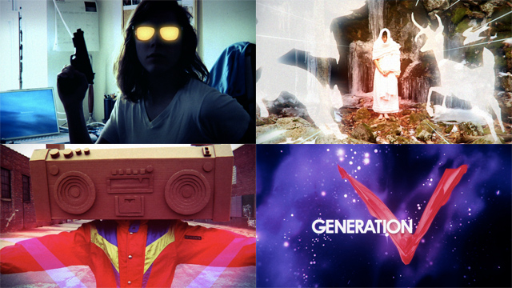
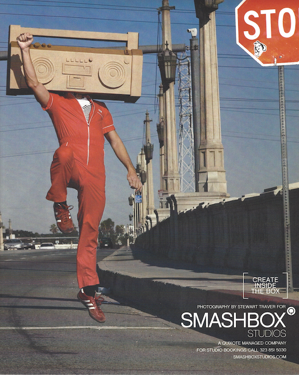

DGENETICS MUSICS
Dgenetics is in your blood.
I founded Dgenetics Musics to launch the careers of myself and three other music producers.
From 2006 to 2009, we produced a body of music and promotional videos that quickly garnered international attention in the music blog sphere. With no funding and no connections, the high quality and inventiveness of our work combined with the low fidelity nature of our resources to create an endearingly campy brand. We were commonly compared to Ed Banger Records (the French label formed by Daft Punk's manager Pedro Winter) and Modular Records (the Australian label behind Tame Impala, The Rapture, and Cut Copy), among the most fashionable labels of the time.We grew a community of passionate fans across the world, we were included in URB Magazine's elite NEXT 100 Issue showcasing the top one hundred entities to look out for in music, our artists performed at high profile events such as the premiere of Bjork's Wanderlust video in NYC and prominent LA promoter Franki Chan's IHEARTCOMIX parties, and my boombox-headed character Dgenetics was chosen by David LaChapelle to be the face of Smashbox Studios' 2008 national ad campaign.
My Roles
I composed, produced, and engineered my own recordings as Dgenetics; executive produced all recordings by the other artists; served as creative director and producer for the company branding, merchandizing, and promotional materials including press photos and promotional videos; developed press contacts, wrote press releases, and solicited press coverage; grew and managed our fan email list; and solicited and coordinated live performances.
Sample work and Miscellaneous
The music video for my single "Skate with Me" was our first release and kicked off our brand by providing a view into the lifestyle of my alter ego Dgenetics — a cultured man about town, the life of the party, and a natural born music producer. The character struck a nerve and the video spread virally across music and design blogs.
While the "Skate With Me" video was making the rounds building intrigue around the Dgenetics character, I produced the Generation V promo video at the top of this page to further develop our audience's emotional engagement with our brand. The video introduces our team of artist/producers as a tightly knit group of superheroes bringing fresh life to the music industry, while calling out to our millenial audience's nostalgia for cartoons like Thundercats and Japanese anime.
I was able to convince the incredibly talented animation and design studio called Born to handcraft the elaborate cel animations for free. They were already fans of the "Skate With Me" video, and they loved the concept for this new video and thought it would make a great addition to their portfolio of work.

Starting with the vocal track from Radiohead's song "Nude", I crafted my own version with live drums, programmed drums, synthesizers, acoustic guitar, and some computer magic.
One of the lead singles off my debut album Bull City, I built "I Want More" around samples I cut from Billie Holiday's "Tell Me More". I featured the vocals of the talented rapper Khalil I discovered in Durham, North Carolina.
Another example where I cut up an original song into micro samples, had fun rearranging the vocal bits to take on a new meaning and groove, and played my own synthesizer and percussion parts around that. My remix was a finalist in a competition held by French fashion and music label Kitsuné.
The full-page ad run by Smashbox Studios across top fashion magazines including Flaunt, Surface, and Nylon, featuring my pretty mug.

Our DJ Pumpkin Patch was hired to perform at the premiere of the music video for Bjork's song Wanderlust, where she fed him chocolates and champagne. 🥂

Press
"Taking a chance on a genre defining, forward thinking roster of bands, Dgenetics has brought us a brilliant taster of everything the label is about. Not just in song, but in moral, diversity, and just about every other buzz word you'd associate with good music. The roster is relatively unfounded at this moment (Dgenetics is in its second year of operation), but what the four acts display over the course of eight tracks and just over half an hour makes you want to rush out and buy everything else they've ever recorded."
AltSounds
"When you tire of all the janky crap polluting the airwaves today, you can always count on LA-based label Dgenetics Musics to deliver the juice. Dgenetics Musics is being hailed by many as 'the new Modular', and justifiably so! While certain other 'indie electronic labels' succumb to the inevitable trap of signing bands that fit a certain formula or exploit a specific genre niche, the boys of Dgenetics Musics strive to promote artistic freedom, eccentricity, and originality in the raw."
Good Soul Department
"...'Skate With Me' is super hot. The fun electro synth pop sound will have you downloading this artist in a flash."
BPM Magazine
"In this melting pot musical generation, labels mixing up styles are ten a penny. But among the coattail-surfing chameleons changing colours to whatever vibe is the latest flavour, there are several that stick out, where traditional rules are discarded and the only principle is to trailblaze. Although in its infancy, Dgenetics is one such renegade."
Fact Magazine
"While one side of the world is already crazy for anything with an Ed Banger or Kitsune stamp, we know it's time to introduce a new contender to the scene. Enter Dgenetics Musics' boombox-for-a-head leader making analog, retro-crazy dance tracks with a few artists that know what's good on the dance floor."
URB Magazine, NEXT 100 Issue
"One of the most interesting new labels we've heard, Dgenetics may well turn out to be the new Modular. With the extremely exciting Fiore, expect great things..."
Pure Groove Records
"With increasing interest from record labels and a growing disillusionment at the prospect of relinquishing creative control to them, LA based producer Dgenetics decided to take matters into his own hands. The result was Dgenetics Musics, a label that within six months of starting is quickly becoming a serious 'one to watch' for discerning music fans, DJ's, and producers. But then, you would kind of expect this from a man with a boombox for a head."
PIMP Magazine
"The Dgenetics Musics label and the awesome weight that they carry are URB TOP 100 YA'LL!"
IHEARTCOMIX Records
"Since we can't let the Ed Bangers and Modulars take over the music world, we have to scoot over and make some room for the new guys, Dgenetics Musics. All you other labels, you betta watch yo backs..."
Big Stereo